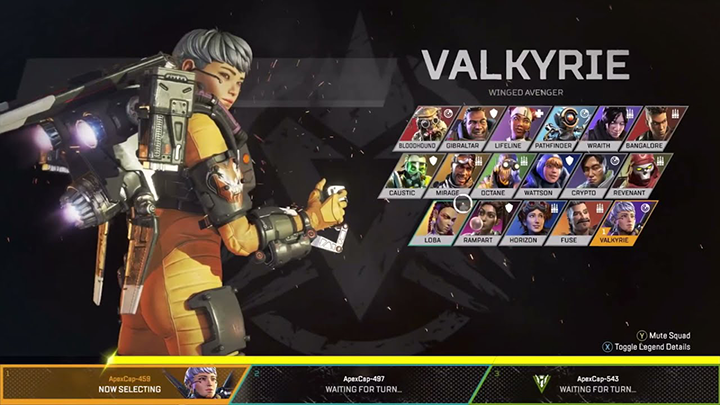
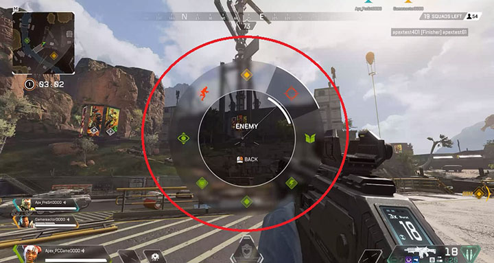
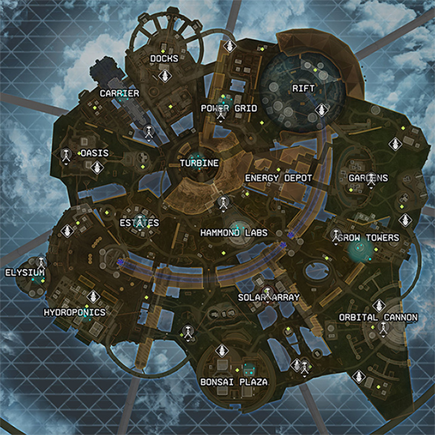
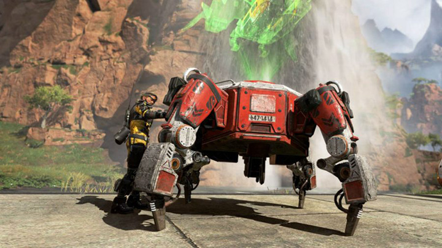
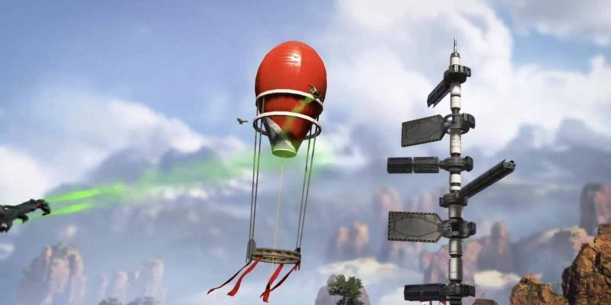
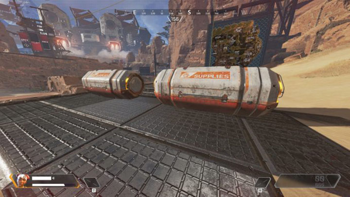

Apex Legends Beginner's Guide
Apex Legends being a free to play game means that there are often new players joining the Apex community,
with this in mind, we have put together a small beginner's guide to welcome the newer players and help
them
get up to speed with the rest of us!
In the Apex Games you'll need to stay sharp, use your wits, and keep your friends close.
But victory also favors the prepared, and a few helpful tips in your pocket can be the difference
between defeat and sweet, sweet triumph.
Check out some of these critical tips and tricks to help boost your chances of winning.
Choose the Legend Who Matches Your Playstyle
In the Apex Arena, all competitors are equals, and the Legends are evenly matched in terms of strength,
speed, and firepower.
It’s their abilities that set them apart, so you’ll want to pick the Legend that matches your preferred
playstyle and complements your squad.
Want to be the shield between your team and opponents? Jump into the arena as the hearty Gibraltar.
How about helping your squad travel long distances to take your enemies by surprise? Pathfinder, with
his trusty grappling hook, is your perfect pick.
Is supporting your team with health boosts more your style? Lifeline is ready for action.
Figure out what role you like to play and try different Legends to see which fits you best.

Stay Close to Your Squad
Squadplay is critical to success in Apex Legends, where you jump into the arena with two teammates at
your side. Working together,
you can keep each other safe and outplay your opponents by combining your abilities.
A well-placed Dimensional Rift by Wraith, for example, can put her team right on top of unsuspecting
opponents,
while Caustic can protect teammates by using Nox gas to drive away enemies.
Try to strike out on your own, and you'll be up against other teams who can easily overwhelm you.
Stick close to your squad, and you’ll have a greater chance at success.
Use Smart Comms to Keep in Touch with Your Teammates
You can give your teammates critical information – and vice versa – through an in-game system that lets
you ping useful items and locations on their screens.
You can pinpoint the position of gear pieces (and what they are), highlight threats,
and tell your teammates which direction you’re going before you’ve even plugged in a microphone.
Use this to your advantage to make sure your teammates see what you see and always have the latest
intel.

Get Familiar with the Arena
There are a few different maps in Apex Legends which rotate every few hours - except for ranked where the
map only rotates at the start of a new split -
having multiple maps that rotate as often as they do in Apex can be overwhelming for new players. Which
is why it's so important to familiarise yourself with
each map, a few areas at a time. You don't need to know the whole map after 3 games so try not to worry
too much about it, it's also helpful to note that some of
the maps will change over time to follow the lore within Apex Legends.
In proper battle royale fashion, the arena is surrounded by a giant Ring that shrinks at regular
intervals throughout the match.
You have to move fast to grab all the items you need before it closes on you, damaging you for every
second you spend outside its perimeter.
Knowing your surroundings will help you make decisions faster and maneuver more effectively.

Go for the Good Stuff, But Be Careful
Different sections of the map spawn different tiers of loot – the higher your weapon or armor piece’s
tier, the stronger it is,
and the better your chance of making it to the end of the match.
Some locations on the map are consistently full of high-tier loot, which means everyone will want to get
to these spots first.
The true motherlode comes packed inside dropships that land at random spots on the map,
rewarding anyone who can claim them with the most powerful loot in the game.
You start each match with level 1 armour, 2 shield cells, 2 syringes and a level 1 helmet but no weapons,
so you and your squad will have to decide if these high-tier caches are worth the risk each time you
play.
Revive and Respawn Your Teammates
A tightly-knit squad can do something critical that no Legend can do alone: bring each other back from
the dead. After your health is depleted,
you’ll go into a downed state where you’re still alive, but slow and in need of medical attention.
If you die before your teammates can help, they have one last shot to save you.
Every Legend carries a Legend Banner that they drop when they die. Only their teammates can pick these
up,
and taking one to a Respawn Beacon will bring that Legend back to life.
It’s a risky move, because the respawning process takes time and a revived player will return with no
weapons or armor.
But pulling off a successful resurrection can bring a team back from the brink of defeat, so don’t let
the opportunity slip by.

Use Jump Towers, Hot Zones, and Other Features to Your Advantage
Kings Canyon is full of semi-permanent map objects you can use to get a leg up on your opponents. Jump
Towers allow you to fly into the air and skydive back down to the ground,
helping your entire team cross the map quickly. Hot Zones give you access to higher-tier loot on a
random portion of the map if you can get there first.
Respawn Beacons can bring downed teammates back to life.
Whether you use them to get out of a hairy situation or take your enemies by surprise, learning how to
use these features adds another layer to your team’s strategy.
That’s as good as another gun in your arsenal.

Don’t Let Anything Go to Waste
You never know what you’re going to find out there in the arena, so don’t be cautious with the caches you
spot. Body armor, weapon attachments, backpack upgrades that allow you to carry more items,
and other helpful pieces of gear are all hidden across the arena for you to grab.
The inventory system will automatically tell you if a weapon or piece of gear is better than what you
already have and keep you from grabbing lower-tier loot.
That way, you won’t risk snatching something you can’t use in a panic.
You and your teammates can help each other by calling out item locations as you spot them. The tagging
system also notes an item’s rarity level, so you can snag a higher-level piece of gear that you might’ve
missed otherwise.
Also make sure to loot fallen enemies - they’ll drop a cache when you take them out, and often have some
of the best loot.
Always keep an eye out, because you never know when a single piece of armor is going to save you in the
end.
